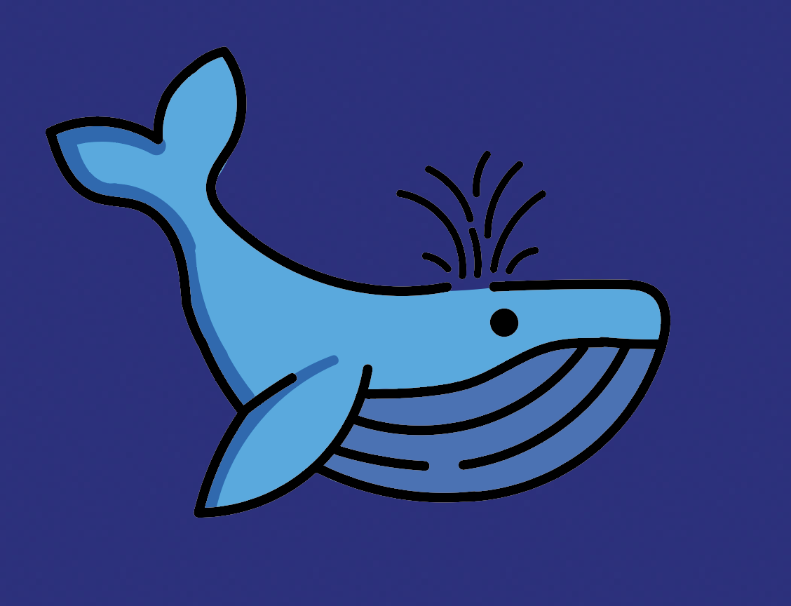

Het Initiatief
Amsterdam heeft een aantal duurzame initiatieven die de grachten schoonhouden. Ik heb het bekendste en meest impactvolle initiatief gekozen voor mijn website.
Plastic Whale
Plastic Whale is een duurzaam initiatief dat zich richt op het opruimen van de grachten van Amsterdam en het verminderen van plasticvervuiling in het water. Het initiatief heeft als doel om de grachten schoon te houden door plastic afval te verzamelen en te recyclen. Plastic Whale organiseert schoonmaakacties waarbij vrijwilligers samen met een speciale boot het afval uit de grachten vissen. Het verzamelde plastic wordt hergebruikt en omgezet in nieuwe, duurzame producten, zoals meubels en kunstwerken. Met dit project hoopt Plastic Whale bij te dragen aan een schonere en duurzamere stad, terwijl tegelijkertijd bewustwording wordt gecreëerd over de impact van plasticvervuiling in stedelijke wateren.
Waar?
Plastic Whale focust zich voornamelijk op de grachten van Amsterdam, maar is ook actief op de volgende locaties:
- Rotterdam
- Den Haag
- Scheveningen
- Den Bosch
- Zwolle
- Berlijn
- Frankfurt
- En nog veel meer andere locaties!
Blijf op de hoogte!
Laat je e-mail achter om op de hoogte te blijven van aankomende evenementen!